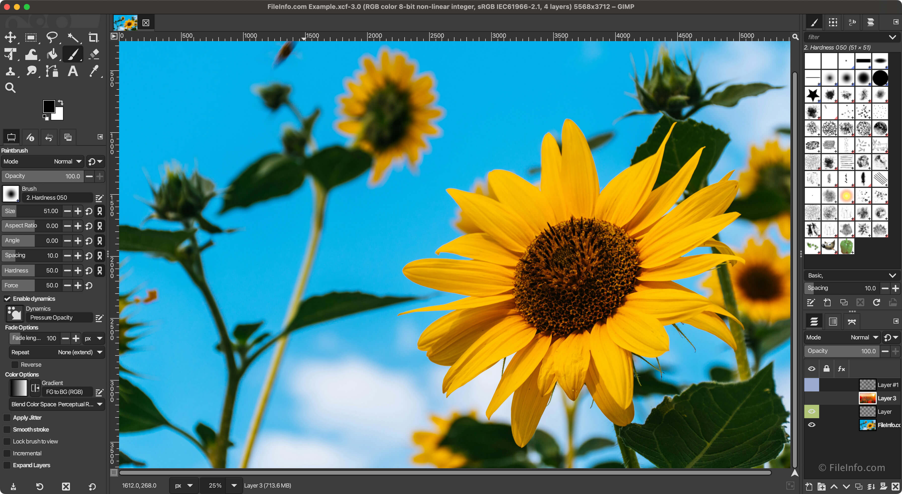

Учимся управлять графическим редактором:
выбирать инструменты, настраивать их параметры
и использовать диалоги для работы с изображением.
🖌️ Инструменты⚙️ Параметры🗂️ Диалоги🎨 Практика
01 / ПОВТОРЕНИЕ
Вспомним рабочее пространство GIMP
На предыдущем уроке мы познакомились с GIMP,
его интерфейсом и принципом послойной работы.
Сегодня разберём отдельные элементы подробнее.

Пример интерфейса GIMP. Расположение панелей
может отличаться в зависимости от версии и настроек.
ИНСТРУМЕНТЫ
✏️🖌️🪣🔍✂️🔄
Здесь выбирают действие.
🟠🟦🌿
СЛОИ
👁️ Фигуры
👁️ Фон
Здесь управляют элементами изображения.
Три важных элемента:
инструмент выполняет действие, его параметры
определяют особенности этого действия,
а диалоги предоставляют дополнительные
возможности управления.
02 / ПАНЕЛЬ ИНСТРУМЕНТОВ
Каждой задаче — свой инструмент 🧰
Панель инструментов объединяет команды
для выделения, рисования, изменения и перемещения
элементов изображения.
🔲
Выделение
Позволяет выбрать определённую область изображения.
🖌️
Рисование
Позволяет создавать линии, мазки и цветные области.
🔄
Преобразование
Позволяет перемещать, поворачивать и изменять объекты.
В некоторых версиях GIMP похожие инструменты
объединены в группы. Чтобы выбрать нужный,
может потребоваться раскрыть соответствующую группу.
03 / ИНСТРУМЕНТЫ ВЫДЕЛЕНИЯ
Работаем с отдельной областью 🔲
Выделение помогает ограничить область редактирования:
например, изменить цвет только одного фрагмента,
не затрагивая остальное изображение.
▭
Прямоугольное выделение
Для областей прямоугольной формы.
⭕
Эллиптическое выделение
Для круглых и овальных областей.
〰️
Свободное выделение
Для областей произвольной формы.
Пример: чтобы нарисовать ровный цветной круг,
можно создать эллиптическое выделение,
а затем заполнить выделенную область цветом.
04 / ИНСТРУМЕНТЫ РИСОВАНИЯ
Создаём и изменяем изображение 🎨
✏️
Карандаш
Создаёт линии с чёткими краями.
🖌️
Кисть
Позволяет рисовать мазками различной формы и размера.
🧽
Ластик
Стирает содержимое выбранного слоя.
🪣
Заливка
Заполняет цветом выбранную область.
Перед рисованием важно проверить
основной цвет и активный слой.
Иначе результат может появиться не там,
где его ожидали.
05 / ПРЕОБРАЗОВАНИЕ
Меняем изображение, а не рисуем заново 🔧
✥
Перемещение
Изменяет положение выбранного элемента.
↔️
Масштабирование
Изменяет размеры элемента.
🔄
Вращение
Поворачивает элемент на заданный угол.
✂️
Кадрирование
Позволяет изменить границы изображения.
Важно: результат некоторых преобразований зависит
от настроек инструмента — он может воздействовать
на слой, выделение или другой объект.
06 / ПАРАМЕТРЫ ИНСТРУМЕНТОВ
Один инструмент — разные результаты ⚙️
Выбрать кисть недостаточно.
Можно изменить её размер, форму, непрозрачность
и другие доступные параметры.
КИСТЬ / РАЗМЕР: 4
Тонкая линия для небольших деталей.
КИСТЬ / РАЗМЕР: 22
Широкий мазок для крупных элементов.
🖌️
Инструмент
Выбираем кисть.
→
⚙️
Параметры
Настраиваем размер и непрозрачность.
→
🎨
Результат
Получаем нужный мазок.
07 / ДИАЛОГИ
Что такое диалоги в GIMP? 🗂️
Диалоги — это дополнительные панели,
которые помогают управлять изображением,
слоями, кистями и другими ресурсами редактора.
Многие диалоги можно открывать через меню
«Окна» → «Стыкуемые диалоги».
Их можно размещать в рабочем пространстве
в удобном порядке.
🗂️ Слои
👁️ Цветные фигуры
👁️ Фон
Управление порядком, видимостью
и другими свойствами слоёв.
🖌️ Кисти
●
◉
✦
▪
✳
Выбор доступной формы кисти.
↶ История действий
01 · Создано изображение
02 · Добавлен слой
03 · Создано выделение
04 · Выполнена заливка
Просмотр и отмена выполненных действий.
Не путай: инструмент «Кисть»
используется для рисования, а диалог «Кисти»
позволяет выбирать доступные формы кистей.
08 / РАБОЧИЙ ПРОЦЕСС
Как всё связано между собой? 🧩
Представим, что нужно нарисовать цветной круг
на отдельном слое.
🗂️
1. Слои
Создаём новый слой в диалоге «Слои».
⭕
2. Выделение
Выбираем эллиптическое выделение.
🎨
3. Цвет
Выбираем цвет и заполняем область.
↶
4. История
При необходимости отменяем последнее действие.
Инструменты, параметры и диалоги
не существуют отдельно друг от друга.
Они дополняют друг друга при работе над изображением.
09 / САМОСТОЯТЕЛЬНАЯ РАБОТА
Выбери свой маршрут 🚀
Оба варианта посвящены одной теме.
Выбери тот, который соответствует
твоим возможностям.
🧠 Теоретическая работа
Ответь на вопросы своими словами.
При необходимости используй материал урока.
01Для чего предназначена панель инструментов GIMP?
02Какие три инструмента выделения были рассмотрены на уроке?
03Для чего используется выделение области изображения?
04Чем карандаш отличается от кисти?
05Для чего предназначен инструмент «Заливка»?
06Какие инструменты позволяют изменять размер и положение элементов?
07Что называют параметрами активного инструмента?
08Как изменение размера кисти влияет на результат рисования?
09Что такое диалоги в GIMP?
10Для чего предназначен диалог «Слои»?
11Чем полезны диалоги «Кисти» и «История действий»?
12Как связаны между собой инструменты, их параметры и диалоги?
Результат работы:
12 письменных ответов на вопросы.
🎨 Практическая работа «Цветные фигуры»
Создай небольшую композицию из трёх цветных фигур
на отдельном слое. Используй инструменты выделения,
заливку и диалоги GIMP.
Пример композиции
Это лишь пример. Цвета, расположение
и формы можно выбрать самостоятельно.
Выполнено: 0 из 6 этапов
Результат работы:
изображение с несколькими цветными фигурами
и не менее чем двумя слоями.
Художественная сложность рисунка не оценивается:
главное — правильное применение инструментов
и диалогов.
Если GIMP ещё не установлен, его официальный сайт:
gimp.org/downloads
.
Установка не является обязательной для выполнения урока.
10 / LESSON COMPLETE
Итог урока 🎓
Мы познакомились с основными группами инструментов,
узнали, как изменять их параметры
и использовать диалоги GIMP.
🧰
Инструменты
Определяют, какое действие выполняется.
⚙️
Параметры
Определяют особенности выбранного действия.
🗂️
Диалоги
Помогают управлять слоями, кистями и историей.
🎨
Результат
Все эти элементы используются совместно.
Главный вывод:
эффективная работа в графическом редакторе
зависит не от количества известных инструментов,
а от умения выбирать и правильно применять их
для решения конкретной задачи.